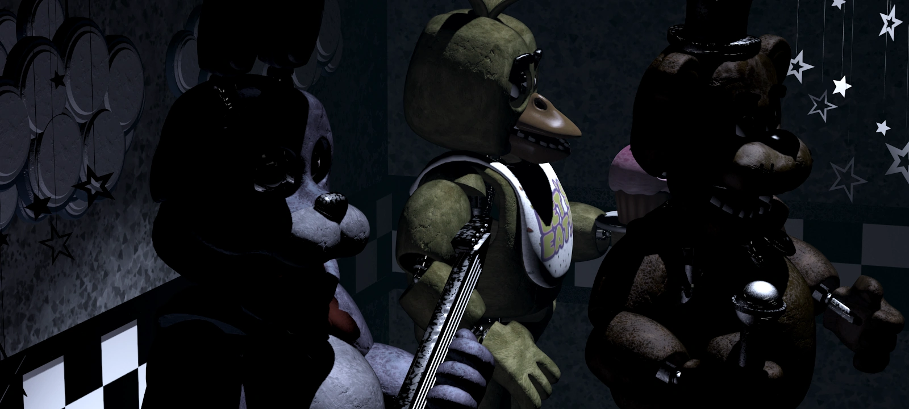
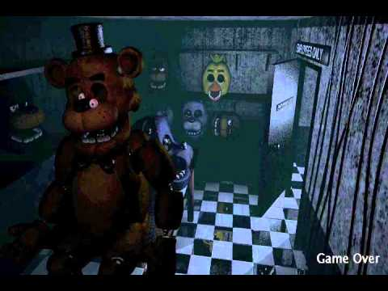

On this website we will explore how sound design effects Five Nights at Freddy’s.
This video shows a glimpse into the creativity shown by Scott Cawthon to make the game fit into the horror genre using sound and ambient noises to really give this place a creepier feel to it than it would have had during the daytime when kids are running around and having fun.
Seeing the cast of characters look around with the classic ambience sound, found above, it is easy to see how this game can flow into the topic of Affect and Emotion (note 1). The player would be feeling a deep feeling of dread if it is their first time playing through the game and having no idea what is going on and seeing all the characters staring at the camera while the game is making unsettling noises at the player.
This image is a good example of fort-da (note 2). The reasoning behind this one is how the player can see the death and think about what went wrong and reflect about how to improve upon it for the next one. The player is not able to see the character so it helps you attach yourself to the scenario and then go in on the next try and always remember you can try again.
Five Nights at Freddy’s also is able to use the Reality effect (note 3) to put the player into the game through the use of sound and visual design. With the game being in first person and having to survive in the office there are many things going on and creepy sounds from the left and right side that are specifically designed to try and freak you out and get you immersed into the environment in a sort of “barthes-esque” type of way.
(note 1): “What is Affect?” (Brian Massumi)
(note 2): “What is the unconscious?” (Sigmund Freud)
(note 3): “The Reality Effect” (Roland Barthes)